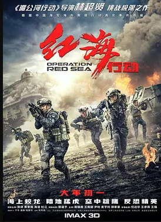

豆瓣高分电影(点击查看)

- 有时好意会造成恶果，人反而被自己所造成的结果所困扰。伊桑·亨特（汤姆·克鲁斯）和他的IMF团队
- （亚历克·鲍德温、西蒙·佩吉、文·瑞姆斯）将在最新的电影《碟中谍6：全面瓦解》中再度回归，他们会与观众们熟悉的盟友（丽贝卡·弗格森、米歇尔·莫娜汉）一起与时间赛跑，应对一次任务中出现的意外。
- 亨利·卡维尔、安吉拉·贝塞特和凡妮莎·柯比也将加入本片的演员阵容，
- 电影制片人克里斯托夫·迈考利将会再度担任导演。
- 目标成为作家的青年李钟秀（刘亚仁 饰），平日里靠兼职养活自己。经营畜牧业的父亲不谙人情，官司缠身，迫使钟秀又要为了搭救父亲而四处奔走。这一日，钟秀在某大型卖场重逢了当年的同学申惠美（全钟淑 饰）。惠美计划近期前往非洲旅行，于是拜托钟秀照看爱猫Boil。
- 不久后惠美回国，与之一同下飞机的还有名叫本（史蒂文·元 饰）的男子。本驾驶保时捷，居住在高级公寓内，优哉游哉，不见工作，四处玩乐，和钟秀相比有如天上地下。
- 不知为何，本走入平民钟秀和惠美的生活，更向新朋友讲述了他奇特的癖好。
- 在钟秀家小聚的那个晚上过后，惠美仿佛人间蒸发了一般无影无踪……
本片根据村上春树的短篇小说《烧仓房》改编。
- 
- 中东国家伊维亚共和国发生政变，武装冲突不断升级。刚刚在索马里执行完解救人质任务的海军护卫舰临沂号，受命前往伊维亚执行撤侨任务。舰长高云（张涵予 饰）派出杨锐（张译 饰）率领的蛟龙突击队登陆战区，护送华侨安全撤离。谁知恐怖组织扎卡却将撤侨部队逼入交火区，一场激烈的战斗在所难免。
- 与此同时，法籍华人记者夏楠（海清 饰）正在伊维亚追查威廉·柏森博士贩卖核原料的事实，而扎卡则突袭柏森博士所在的公司，意图抢走核原料。混战中，一名隶属柏森博士公司的中国员工成为人质。
- 为了解救该人质，八名蛟龙队员必须潜入有150名恐怖分子的聚集点，他们用自己的信念和鲜血铸成中国军人顽强不屈的丰碑！
- 本片根据也门撤侨事件改编。
- 马进欠下债务，与远房表弟小兴在底层社会摸爬滚打，习惯性的买彩票，企图一夜暴富，并迎娶自己的同事姗姗。一日，公司全体员工出海团建，
- 途中，马进收到了彩票中头奖的信息，六千万！而出道
- 就在马进狂喜自己翻身的日子终于到来之际，
- 一场突如其来的滔天巨浪打破了一切。苏醒过来的众人发现身处荒岛 ，丧失了一切与外界的联系……